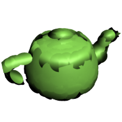

VRayProxy
VRayProxy Overview
VRayProxy allows you to import geometry from an external mesh at render time only. The geometry is not present in the 3ds Max scene and does not take any resources. This allows the rendering of scenes with many millions of triangles - more than 3ds Max itself can handle.
Exporting a Mesh to a File
Before you can import a mesh through a VRayProxy object, you need to create the mesh file first. You can do this in two ways:
-
Through the quad-menu: select the meshes you want to export, right-click in the viewport and select the V-Ray mesh export option. This will cause the Mesh Export dialogue to appear.
-
Dialog from MaxScript: select the meshes you want to export and then type
doVRayMeshExport()
in the MaxScript Listener window. This will cause the Mesh Export dialogue to appear.
-
Direct export from MaxScript: select the meshes you want to export and then use the vrayMeshExport() function:
vrayMeshExport [meshFile:"<mesh file>"] [autoCreateProxies:true|false] [exportMultiple:true|false] [animation:on|off] [animationRange:#scene|#explicit] [animationStart:<integer>] [animationEnd:<integer>] [animationRedrawViews:true|false] [maxPreviewFaces:<integer>]
where <mesh file> is the name of the desired .vrmesh file. If the name does not contain a path, the default 3ds Max mesh path is used. If the name does not contain an extension, a .vrmesh extension is automatically appended. If the name does not contain a file name, the scene node name is used instead. If the autoCreateProxies option is not specified, by default the meshes are just exported, no proxies are created in the scene. If the exportMultiple option is not specified, the meshes are exported to multiple files by default. If the animation option is set to on, an animated proxy file is created. In that case, the range of the animation is determined by the animationRange option - if set to #explicit, then the frame range for the export is specified by the animationStart and animationEnd options (in frames), otherwise the current scene animation range is used. If the animationRedrawViews option is set to true then the viewports will be updated during the animation export process. If the maxPreviewFaces parameter is specified, then the exported .vrmesh file will contain a preview with the specified maximum of triangles, otherwise a default value of 10000 triangles is used.
-
The function returns ok if the .vrmesh file was exported successfully, and undefined otherwise.
Importing a Mesh from a File
Once you have exported a mesh to a VRayProxy you can at any time import the mesh back. There are two ways you can import a mesh back from a VRayProxy object:
-
By using the Import as mesh button from the interface
-
Direct import from MaxScript: select the VRayProxy object you want to import the mesh from and then use the vrayMeshImport() function.
|
vrayMeshImport [proxy: <proxy mesh object(s)>] [explicitNormals: true|false] [weldVertices: true|false |
where <proxy mesh object(s)>. is a single VRayProxy object, an array of VRayProxy objects or an ObjectSet (for example $geometry) . If this option is not specified VRayProxy object(s) from the current selection are imported as mesh(es).
explicitNormals - in cases where the original mesh has explicit information about the vertex normals, that information is also saved in the .vrmesh file when the mesh is exported. When this option is set to true it makes sure that the explicit normals information contained in the proxy is taken into account during the import.
weldVertices - during a .vrmesh file export, V-Ray may split the original mesh in smaller chunks that can be loaded independently of one another. This may cause some vertices to be duplicated in more than one chunk. When this option is set to true will cause V-Ray to perform a weld operation after the mesh is imported, so that split vertices are merged.
The function returns an array of the newly created mesh objects or undefined when there are no valid VRayProxy objects specified.
The Mesh Export Dialogue
The Mesh Export dialogue allows you to specify the mesh file as well as some export options.
Folder - this is the folder where the mesh file(s) will be created.
Export as single file - this option will take all selected objects and will merge them into one mesh file. This option also stores the transformations of the selected objects. When you import the file with a proxy object, it must be centered at the origin, if you want the objects to be in the same place. Also, since the imported mesh is rendered using the material of the proxy object, all meshes from the file will render with that material. You must use sub object materials and different material IDs if you want them to have different materials.
Export as multiple files - this option will create one file for each selected object. The name of each file is derived from the name of the corresponding 3ds max node. The transformation of an object is not included in its mesh file, and the corresponding proxy must have the same transformation as the original object, if it is to appear in the same place. Note that you can use this option even with a single object, which will cause the object pivot to be preserved in the exported .vrmesh file.
File - this is the name of the file, if you have selected the Export as single file option. You don't need to specify a path - the Folder path will be used.
Specify preview mesh - when enabled, the user can specify a mesh that is going to be used to preview the proxy in the viewport. To do that click on the Pick preview mesh button and select a mesh from the scene
Export animation - if the mesh is animated you can export that animation in the .vrmesh file with the animation by enabling this option.
Frame range - specify what part of the animation to be exported into the .vrmesh file.
-
Scene animation range - the whole animation will be exported into the .vrmesh file.
-
Frame range - specify exactly which frames are going to be exported by setting values for the Start Frame and the End Frame parameters.
Redraw views during export - when this option is selected you will be able to see the animation playing in the view port while it is being exported. This is an easy way to monitor the progress of the export.
Automatically create proxies - this option will create proxy objects for the exported meshes. The proxies will have the correct transformations and materials derived from the original objects. The original objects will be deleted.
Export point clouds - this option will add a point cloud representation of the mesh separated in different levels of detail that can be used by proxies for memory saving when rendering distant objects.
Lowest level point size - determines the size of point cloud disks at the most detailed level. If the size is small point cloud rendered at lowest level will appear closer to original mesh but used memory size will increase.
Example: The Lowest Level Point Size Parameter
This example demonstrates the effect of the Lowest level point size parameter. Smaller values mean that more point cloud disks with smaller radius will be used to approximate the original mesh geometry at lowest level (that is when rendered closest to camera). Increasing this size will make the approximation more rough - with a smaller number of disks but larger in size. While rendering it is not possible to achieve better detail than the one at lowest level.
Lowest level point size is 2.0
Lowest level point size is 4.0
Lowest level point size is 8.0

Lowest level point size is 16.0
Lowest level point size is 24.0
Faces in preview - allows you specify how many faces are going to be used to show a preview of the proxy in the view port.
Warn for existing files - when this option is selected V-Ray will warn you if you are saving over an existing file.
Pressing the OK button will create the mesh files and the proxy objects. The export process may take some time, depending on the amount of geometry that must be processed.
The .vrmesh File Format
Meshes are exported to a special .vrmesh file format. It contains all geometric information for a mesh - vertices and face topology as well as texture channels, face material IDs, smoothing groups, normals - in short, everything that is needed to render the mesh. In addition, the mesh is preprocessed and subdivided into chunks for easier access. The file also contains a simplified version of the mesh used for preview purposes in the viewports. Also, there is an option for adding a point cloud data to the file which is a simplified geometric representation of the mesh in the form of 3D disks with different levels of detail. Each level comprises disks with equal radius which is greater for levels of lower detail and smaller for the more detailed ones. When the object is rendered a point cloud geometry level is chosen depending on the distance between the object and the camera - for distant objects lower resolution point clouds are used. Thus original mesh is replaced by the simpler point cloud geometry with the appropriate level of detail allowed by distance.
It is important to realize that the mesh is in a "ready to render" format. No further modifications to the mesh are expected. You can't apply modifiers to the mesh, or animate it in any way except if you animate the position/orientation of the proxy object. If you need to make changes to the mesh, you can import it back as an Editable mesh (see the Import section below) and re-export it back to a .vrmesh file.
Alembic Support
The VRayProxy object can load and render Alembic files (.abc). The supported geometry types are polygonal meshes (without subdivision surfaces), spline curves and particles.
In older V-Ray versions, UV coordinates in the Alembic file were always imported as mapping channel 0. This meant that in Bitmap textures for materials applied on Alembic proxy objects, you needed to select Vertex Color Channel:
This was essentially the same this as when bringing in .vrmesh files created in other applications (e.g. Maya).
Starting with V-Ray 3.0, you can use the Force first map channel option to remap the 0th mapping channel to the more usual map channel 1:
V-Ray will recognize velocity information for motion blur if it stored either as standard Alembic velocity, or as a 3d vector array property called
arbGeom.v
or
arbGeom.velocities
.
Additional Alembic color sets are imported as mapping channels with indices greater than
0
(i.e.
1
,
2
etc).
The
VRayProxy
has some additional parameters related to Alembic files. See the
Alembic mesh
section for more details.
Creating a Proxy Object
After you export a mesh to a .vrmesh file, you need a proxy object to represent it in the 3ds Max scene. To create a proxy object, go to the Create panel and choose the V-Ray category; click the VRayProxy button and then click in a viewport to create the actual proxy object. A dialogue box will appear that allows you to choose the .vrmesh file to import.
Proxy Parameters
Mesh file - this is the source .vrmesh or .abc file.
Expand # to frame number - when this option is checked the symbol "#" can be used in the file name to specify that the loaded proxy is a part of an animation sequence. V-Ray will then load the other frames accordingly.
Flip axis - this checkbox switches between the y and z axis of the proxy being used as a vertical axis. It allows the user to align the vertical axis of the proxy with the vertical axis in the scene in cases where the proxy was not exported from 3ds Max or when loading Alembic files.
Scale - allows to quickly scale the proxy geometry up or down.
Display
Display - controls the display of the proxy in the viewports:
-
bounding box - the mesh is represented as a box in the viewports.
-
preview from file (edges) - displays the mesh preview info that is stored in the .vrmesh file showing only the edges of the object.
-
preview from file (faces) - displays the mesh preview info that is stored in the .vrmesh file showing only the faces of the object.
-
point - the mesh is represented as a point
Animation
Playback - select a playback mode from the drop down menu
-
Loop - the animation is looped by skipping to the first frame once it has finished
-
Play once - the animation is played just once
-
Ping-pong - the animation is looped by playing it backwards once the last frame has been reached and then playing it forward again when the first frame is reached
-
Still - the animation is not played. Instead just one frame of the animation is shown. You can select which that frame is with the help of the Offset parameter.
Offset (frames) - use this parameter to offset the beginning of the animation by given number of frames. You can use positive as well as negative values here.
Speed - this is a multiplier for the speed of the animation. Putting negative numbers here will make the animation play backwards.
Import
Import as mesh - imports the geometry from the . vrmesh as an Editable mesh object. Note that the new mesh will be created at the coordinate system origin (0,0,0), and not at the current place of the VRayProxy object.
Use explicit normals - in cases where the original mesh has explicit information about the vertex normals, that information is also saved in the .vrmesh file when the mesh is exported. Checking this option makes sure that the explicit normals information contained in the proxy is taken into account during the import.
Weld vertices in result - during a .vrmesh file export, V-Ray may split the original mesh in smaller chunks that can be loaded independently of one another. This may cause some vertices to be duplicated in more than one chunk. Checking this option will cause V-Ray to perform a weld operation after the mesh is imported, so that split vertices are merged.
Point cloud
Use if present - enables the usage of point cloud data if available.
Level multiplier - determines the way point cloud levels are loaded. A value of 1.0 means that the level to load is determined exactly by the distance from the camera to the object. A value smaller than 1.0 means that the level will be of greater detail than required by distance. Values greater than 1.0 mean that the resolution of the level will be smaller than the one determined by distance. A value of 0.0 means that no point cloud level will be loaded and the original mesh will be rendered instead.
Example: The Level Multiplier Parameter
This example demonstrates how the Level multiplier controls proxy rendering at a different distance to the camera. When parameter is 0.0 no point clouds are loaded, when the value is 1.0 the exact level of detail is loaded for rendering according to zoom factor, values between 0.0 and 1.0 bring more detail than needed and when the value is higher than 1.0 lower than required detail level is loaded.
|
|
Zoom is 0.5x |
Zoom is 1x |
Zoom is 2x |
|
Level multiplier is 0.0 |
|
|
|
|
Level multiplier is 1.0 |
|
|
|
|
Level multiplier is 10.0 |
|
|
|


Force first map channel - when enabled, V-Ray will force the first mapping channel stored in the proxy file (.vrmesh or .abc) to be remapped to the specified 3ds Max map channel.
First map channel - If Force first map channel is enabled, this is the index of the map channel.
Proxy Mesh Visibility
These options allow the user to control the visibility of a proxy's components when more then one meshes have been exported. The visibility can be controlled either by the objects names or by object IDs
List type - Specifies whether the meaning of the lists
-
Exclude - when this option is enabled, the selected object in the list will be invisible.
-
Include - when this option is enabled, only the selected object in the list will be visible.
Object name list - a list of all the objects in the proxy file.
Object id list - a list of all the Object ID in the proxy file.
Alembic Mesh
This section holds the controls for the V-Ray proxy when an alembic file (.abc) is loaded.
General
Starting object - allows to specify a starting path in the Alembic file; only objects below that path will be rendered. The path may start with ABC/ or it may be omitted.
Use full names - when this option is enabled the full path to each geometry set in the alembic file is displayed in the Proxy mesh and Proxy hair visibility lists.
Recompute bounding box - enabling this check box forces V-Ray to recompute the bounding box for the geometry before rendering. When this is off V-Ray will use the bounding box specified in the Almebic file. However, sometimes these bounding boxes are not correct and in that case the rendering will also be incorrect. To avoid such issues enable this option. Note that this option might slow down the rendering.
Compute normals - this option allows you to force smooth normals on the geometry in case they were not originally smoothed.
Mesh
Smooth angle - when the Compute normals checkbox is enabled this specifies the angle below which normals will be smoothed.
Preview count - allows you specify how many faces are going to be used to show a preview of the proxy in the view port.
Hair
Preview count - allows you specify how many splines are going to be used to show a preview of the proxy hair in the view port.
Width multiplier - this multiplier allows you to control the hair width during rendering.
Particles
Preview count - allows you to specify how many particles to show in the viewports.
Width multiplier - controls the size of the particles when rendering.
Notes
-
The geometry generated by the proxy object is not modifiable. Any modifiers applied to the VRayProxyobject will be ignored.
-
If you need to create several proxies linked to the same .vrmesh file, it's better to make them instances - this will save memory since the .vrmesh file will be loaded only once.
-
Materials are not saved in the .vrmesh file. Instead, the geometry will be rendered with the material applied to the VRayProxy object. This is because third party materials and procedural textures would be difficult to describe in a general way. In addition, you may want to edit the material independently of the mesh.
-
The resulting .vrmesh files can be rendered outside of 3ds Max - for example, by the standalone version of V-Ray, or V-Ray for Maya.
-
Standard shadow maps will not include information about the proxy objects. If you want the proxy objects to cast shadows, you should use VRayShadow or VRayShadowMap shadow types.
-
You can convert .ply and .obj files to .vrmesh files with the help of the ply2vrmesh converter tool.
-
The V-Ray SDK has methods for reading and writing of .vrmesh files.